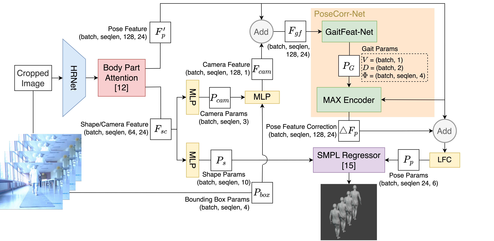
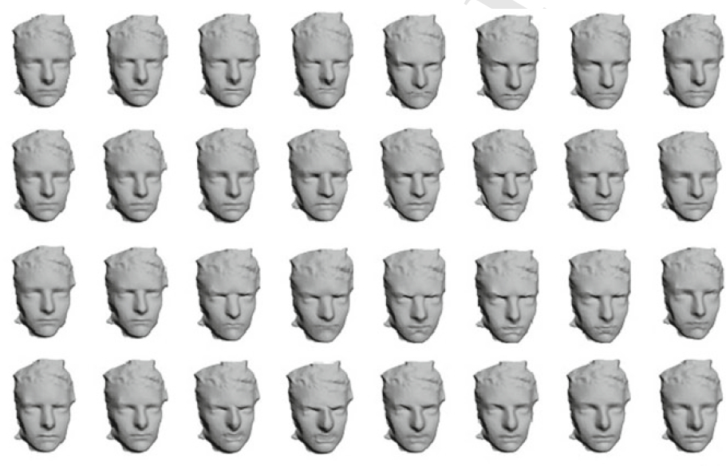

|
|
|
|
|
Selected Publications of Hyewon Seo categorized by theme
[Learning-based
Modeling of Human Shapes &
Animations | Matching, similarity,
segmentation | Sketch-Based Shape Reconstruction | Modeling
of Human Body & Cloth | Texture Mapping | Character Animation, Games, VR Systems | Shape Signal Processing]
* Learning-based Modeling of Human Shapes & Animations (2003-2005, 2019-)
|
|
|
Assessing 3D Gait Impairment with Reasoning based on LLMs Wang D., Bobenrietch C., and Seo H. Assessing gait impairment plays an important role in early diagnosis, disease monitoring, and treatment evaluation for neurodegenerative diseases. Despite its widespread use in clinical practice, it is limited by subjectivity and a lack of precision. While recent deep learning-based approaches have consistently improved classification accuracies, they often lack interpretability, hindering their utility in clinical decision-making. To overcome these challenges, we introduce AGIR, a novel pipeline consisting of a pre-trained VQ-VAE motion tokenizer and a subsequent Large Language Model (LLM) fine-tuned over pairs of motion tokens and Chain-of-Thought (CoT) reasonings.... Under review, 2025. |
|
|
|
Shape-Conditioned Human Motion Diffusion Model with Mesh Representation Xue K., Seo H., Bobenrietch C., and Luo G. Human motion generation is a key task in computer graphics. While various conditioning signals such as text, action class, or audio have been used to harness the generation process, most existing methods neglect the case where a specific body is desired to perform the motion. Additionally, they rely on skeleton-based pose representations, necessitating additional steps to produce renderable meshes of the intended body shape.
Given that human motion involves a complex interplay of bones, joints, and muscles, focusing solely on the skeleton during generation neglects the rich information carried by muscles and soft tissues, as well as their influence on movement, ultimately limiting the variability and precision of the generated motions. In this paper, we introduce Shape-conditioned Motion Diffusion model (SMD), which enables the generation of human motion directly in the form of a mesh sequence, conditioned on both a text prompt and a body mesh... Presented at EuroGraphics 2025. The project page here. |
|
|
|
Inverse Garment and Pattern Modeling with a Differentiable Simulator Yu B., Cordier F., and Seo H. The capability to generate simulation-ready garment models from 3D shapes of clothed people will significantly enhance the interpretability of captured geometry of real garments, as well as their faithful reproduction in the digital world. This will have notable impact on fields like shape capture in social VR, and virtual try-on in the fashion industry. To align with the garment modeling process standardized by the fashion industry and cloth simulation software, it is required to recover 2D patterns, which are then placed around the wearer's body model and seamed prior to the draping simulation. This involves an inverse garment design problem, which is the focus of our work here... Presented at Pacific Graphics 2024. |
|
 |
|
Video-based gait analysis for assessing Alzheimers Disease and Dementia with Lewy Bodies Wang D., Seo H., Drira H., Zouaoui C. and Jang J. Dementia with Lewy Bodies (DLB) and Alzheimers Disease (AD) are two common neurodegenerative diseases among elderly people. Gait analysis plays a significant role in clinical assessments to discriminate these neurological disorders from healthy controls, to grade disease severity, and to further differentiate dementia subtypes. In this paper, we propose a deep-learning based model specifically designed to evaluate gait impairment score for assessing the dementia severity using monocular gait videos... Presented at MICCAI Workshop on Applications of Medical Artificial Intelligence (AMAI) 2023. An improved method has been presented at MICCAI 2024. The project page here. |
|
|
|
Groupwise Shape Correspondence Refinement with a Region of Interest Focus Galmiche P. and Seo H. While collections of scan shapes are becoming more prevalent in many real-world applications, finding accurate and dense correspondences across multiple shapes remains a challenging task. In this work, we introduce a new approach for refining non-rigid correspondences among a collection of 3D shapes undergoing non-rigid deformation. Our approach incorporates a Region Of Interest (ROI) into the refinement process, which is specified by the user on one shape within the collection. Based on the functional map framework and more specifically on the notion of cycle-consistency, our formulation improves the overall matching consistency while prioritizing that of the region of interest... Presented at Pacific Graphics 2023. |
|
|
|
3D Facial Expression Generator Based on Transformer VAE Zou K., Yu B., and Seo H. We present a generative model for the 3D facial expression mesh sequences, from onset to the termination of a desired expression. We tailor a Transformer VAE architecture: The encoder compresses a sequence of facial landmarks into an expression-aware regularized latent space, while the decoder generates a new sequence from the sampled latent variable, conditioned on a desired expression. After a landmark-guided mesh deformation, a given 3D neutral face is driven to an animated mesh sequence with the expected expression. The generated sequences are consistent, of quality, and exhibit a good level of diversity, improving over state-of-the-art methods... Presented at ICIP 2023 and it's extension accepted at ACM TOMM journal. Project page here. |
|
|
|
DSNet: Dynamic skin deformation prediction by Recurrent Neural Network Seo H., Zou K. and Cordier F. Skin dynamics contributes to the enriched realism of human body models in rendered scenes. Traditional methods rely on physics-based simulations to accurately reproduce the dynamic behavior of soft tissues. Due to the model complexity and thus the heavy computation, however, they do not directly offer practical solutions to domains where real-time performance is desirable.... We present a learning-based method for dynamic skin deformation. At the core of our work is a recurrent neural network that learns to predict the nonlinear, dynamics-dependent shape change over time from pre-existing mesh deformation sequence data. Our network also learns to predict the variation of skin dynamics across different individuals with varying body shapes. After training the network delivers realistic, high-quality skin dynamics that is specific to a person in a real-time course. We obtain results that significantly saves the computational time, while maintaining comparable prediction quality compared to state-of-the-art results. To be presented at CGI 2021. Slides to be presented and the accompanying Video |
|
 |
|
Generating 3D Facial Expressions with Neural Networks Seo H. and Luo G. Learning based methods have proved effective at
high-quality image synthesis tasks, such as content-preserving image
rendering with different style, and the generation of new images depicting
learned objects. Some of the properties that make neural networks suitable
for such tasks, for example robustness to the inputs low-level feature, and
the ability to access contextual information, are also desirable in 3D shape
domain. However, recent successful learning techniques, e.g. deep
neural networks, do not easily generalize to 3D shapes, since the regular
grid assumption with 2D images does not have a straightforward equivalent in
the common shape representation in 3D. Here, we concentrate on the 3D
facial shape and expression generation task, an important problem in computer
graphics and other application domains, where existing data-driven approaches
mostly rely on direct shape capture or shape transfer. At the core of our
approach are a generative neural network and with proper shape
representations In a Springer book Intelligent Scene Modelling and Human Computer Interaction. |
|
|
|
An Example-Based Approach to Human Body Manipulation, Seo H. and Magnenat-Thalmann
N., We discuss a set of techniques
based on examples for generating realistic, controllable human whole-body
models. Users are assisted in automatically generating a new model or
modifying an existing one by controlling the parameters provided. Our
approach is based on examples and consists of three major parts. First, each
example from the 3D range scanner is preprocessed so that the topology of all
examples is identical. Second, the system that we call the modeling
synthesizer learns from these examples the correlation between the parameters
and the body geometry. After this learning process the synthesizer is devoted
to the generation of appropriate shape and proportion of the body geometry
through interpolation. Finally, we demonstrate our modifier synthesizer for
more subtle manipulations of example models, using high-level parameters such
as fat percentage. On any synthesized model, the underlying bone and skin
structure is properly adjusted, so that the model remains completely animatable using the joint animation. By allowing
automatic modification from a set of parameters, our approach may eventually
lead to the automatic generation of a variety of population models. Graphical
Models (Academic Press) 2004. |
|
|
|
Synthesizing Animatable Body Models
with Parameterized Shape Modifications Seo H., Cordier
F. and Magnenat-Thalmann N., Based on an existing modeller that can generate realistic and controllable whole-body
models, we introduce our modifier synthesizer for obtaining higher level of
manipulations of body models by using parameters such as fat percentage and
hip-to-waist ratio. Users are assisted in automatically modifying an existing
model by controlling the parameters provided. On any synthesized model, the
underlying bone and skin structure is properly adjusted, so that the model
remains completely animatable using the underlying
skeleton. Based on statistical analysis of data models, we demonstrate the
use of body attributes as parameters in controlling the shape modification of
the body models while maintaining the distinctiveness of the individual as
much as possible. ACM
SIGGRAPH/Eurographics Symposium on Computer
Animation 2003. |
|
|
|
An Automatic Modeling of Human Bodies from Sizing Parameters Seo H., and Magnenat-Thalmann
N., In this paper, we present an automatic, runtime modeler
for modeling realistic, animatable human bodies. A
user can generate a new model or modify an existing one simply by inputting a
number of sizing parameters. We approach the problem by forming deformation
functions that are devoted to the generation of appropriate shape and
proportion of the body geometry by taking the parameters as input. Starting
from a number of 3D scanned data of human body models as examples, we derive
these functions by using radial basis interpolation. A prerequisite of such
formulation is to have correspondence among example models in the database.
We obtain the correspondence by fitting a template onto each scanned data.
Throughout the paper, body geometry is considered to have two distinct
entities, namely rigid and elastic component of the deformation. The rigid
deformation is represented by the corresponding joint parameters, which will
determine the linear approximation of the physique. The elastic deformation
is essentially vertex displacements, which, when added to the rigid
deformation, depicts the detail shape of the body. ... ACM
SIGGRAPH Symposium on Interactive 3D Graphics, 2003 |


* Matching, similarity, segmentation (2013-)
|
|
|
3D mesh animation, compression, adaptive spatio-temporal segmentation Luo G., Deng Z., Jin X., Zhao X.,Zeng W., Xie W. and Seo H. With
the recent advances of data acquisition techniques, the compression of
various 3D mesh animation data has become an important topic in
computer graphics community. In this paper, we present a new
spatio-temporal segmentation-based approach for the compression of 3D
mesh animations... ACM Trans. Multimedia Computing, Communications, and Applications, 2020. Extended version of the long paper presented at ACM SIGGRAPH Symposium on Interactive 3D Graphics and Games, 2019. |
|
|
|
Visual Attention for Rendered 3D Shapes Lavou G., Cordier F., Seo H., and Larabi C.
Computer
Graphics Forum (Proc. Eurographics), 2018. |
|
|
|
Spatial Matching of Animated Meshes Seo H. and Cordier F., This paper presents a new
technique which makes use of deformation and motion properties between
animated meshes for finding their spatial correspondences. Given a pair of
animated meshes exhibiting a semantically similar motion, we compute a sparse
set of feature points on each mesh and compute spatial correspondences among
them so that points with similar motion behavior are put in correspondence.
At the core of our technique is our new, dynamic feature descriptor named AnimHOG, which encodes local deformation characteristics.
AnimHOG is ob-tained by
computing the gradient of a scalar field inside the spatiotemporal neighborhood
of a point of interest, where the scalar values are obtained from the
deformation characteristic associated with each vertex and
at each frame. The final matching has been formulated as a discreet
optimization problem Computer Graphics Forum (Proc.
Pacific Graphics), 2016. |
|
|
|
Joint Entropy based Key-frame Extraction for 3D Animations Luo G., Lei G. and Seo H., The
detection of abrupt changes in a sequence is a main strategy for extracting
key-frames. In this paper, we present a joint entropy based key-frame
extraction method for 3D animations. We start by applying an existing
deformation-based feature descriptor to measure the degree of deformation of
each triangle within each frame, from which we compute the statistical joint
probability distribution of triangles deformation between neighboring
frames. To avoid noises, we modify to compute joint probability distribution
between two consecutive subsequences of frames with a fixed length, with
which we further compute joint entropy between the two subsequences. Finally,
we extract key-frames by taking the local maximal from the joint entropy
curve of a given 3D animation...
The Visual Computer (Springer) 2016. Extension of a short paper presented
at Computer Graphics International (CGI), 2015. |
|
|
Spatio-temporal Segmentation for the Similarity Measurement of Deforming Meshes Luo G., Cordier F., and Seo H. Although there have been a large body
of
works on computing the similarity of
static shapes, similarity judgments
on deforming meshes are not studied well. In this study, we investigate a
similarity measurement method
for comparing two deforming meshes. Based on the degree of deformation,
we first binarily label each triangle within each frame as
either 'deformed' or 'rigid', then
merge the 'deformed' triangles in both spatial and temporal domains for the
segmentation. The segmentation
results are encoded in a form of evolving graph, with an aim of obtaining a
compact representation of
the motion of the mesh. Finally, we formulate the similarity measurement as a
sequence matching problem. ... The Visual Computer (Springer) 2015. Extension of an article presented at
EG Workshop on 3DOR 2014 ("Similarity of Deforming Meshes Based on Spatio-temporal Segmentation") |
|
|
|
On Spatio-Temporal Feature Point Detection for Animated Meshes Mykhalchuk V., Seo H., and Cordier F. Although automatic feature detection
has been a long-sought subject by researchers in computer graphics and
computer vision, feature extraction on deforming models remains as relatively
unexplored area. In this paper, we develop a new method for automatic
detection of spatio-temporal feature points on
animated meshes. Our algorithm consists of three main parts. We first define
local deformation characteristics, based on strain and curvature values
computed for each point at each frame. Next, we construct multi-resolution
space-time Gaussians and Difference-of-Gaussian (DoG)
pyramids on the deformation characteristics representing the input animated
mesh, where each level contains 3D smoothed and subsampled representation of
the previous level. Finally, we estimate locations and scales of spatio-temporal feature points by using a
scale-normalized differential operator. A new, precise approximation of spatio-temporal scale-normalized Laplacian has been
introduced, based on the space-time DoG.... The Visual Computer (Springer) 2015. Extension/revision
of an article presented at Computer Graphics International 2014 ("AniM-DoG: A Spatio-Temporal
Feature Point Detector for Animated Mesh"). |
|
|
Temporal Segmentation of Deforming Meshes Luo G., Seo H., and Cordier F., The 31st Computer Graphics
International (CGI), 2014. |
||
|
|
Landmark Transfer with Minimal Graph Mykhalchuk V., Cordier F., Seo H., We present an efficient and robust
algorithm for the landmark transfer on 3D meshes that are approximately isometric. Given
one or more custom landmarks placed by the user on a source mesh, our method
efficiently computes corresponding landmarks on a
family of target meshes. The technique is useful when a user is interested in
characterization and reuse of application-specific landmarks on meshes of similar shape
(for example, meshes coming from the same
class of objects). Consequently, across a set of multiple meshes consistency is
assured among landmarks, regardless
of landmark geometric
distinctiveness. The main advantage of our method over existing
approaches is its low computation time. Differently from existing non-rigid
registration techniques, our method detects and uses a minimum number of
geometric features that are necessary to accurately locate
the user-defined landmarks and avoids performing unnecessary full registration. In addition,
unlike previous techniques that assume strict consistency with respect to
geodesic distances, we adopt histograms of
geodesic distance to define feature point coordinates, in order to handle the deviation of
isometric deformation. ... Computers & Graphics (Elsevier),
2013 (Vol. 37, Num. 5, pp. 539552) |
|
|
Compression of 3D animation sequences by temporal segmentation Luo G.,
Cordier F., Seo H.,
|
* Sketch-Based Shape Reconstruction (2007-)
|
|
|
Descrptive: Interactive 3D Shape Modeling from a Single Descriptive Sketch, Bobenrieth C., Cordier F., Habibi A., and Seo H. In this paper, we present a sketch-based modeler that reconstructs a 3D shape by combining a single descriptive sketch and minimal user intervention. The user provides a single 2D drawing in the form of a descriptive sketch, where solid curves describe the visible silhouette, and dashed curves the hidden outline. The curves are partitioned into a set of closed curves in a semi-automatic manner, each of which is consolidated into a closed surface element by solving a constrained optimization problem. The final 3D shape is generated by assembling these surface elements. The algorithmic reconstruction is complemented by allowing users to optionally guide the shape computation or correct any inaccuracy. This is done by successively specifying different kinds of local constraints on sparsely selected points in rotated views, such as adjustment of volume thickness along the projection line, or curvature discontinuity. Computer Aided Design 2020. Slides presented by Cdric Bobenrieth at journes du Groupe de Travail en Modlisation Gomtrique 2020 (in French). |
|
|
|
Reconstructing Flowers from Sketches, Bobenrieth
C., Seo H., Cordier F., Habibi A. As the symbol of beauty, floral objects have been one of the most popular subjects of artistic drawing. However, designing 3D floral models is generally time- and resource-consuming, because of their structural and geometrical complexity. In this paper, we address the problem of reconstructing floral objects from sketch input. The user draws a relatively clean sketch of a flower and a few additional guide markings from an arbitrary view to rapidly create quality geometric models of flowers. Our system offers a novel modeling scheme compared to several existing flower modelers accepting sketch as input, where the user is required to work with different views, providing step-by-step sketch input. Computer Graphics Forum (Pacific Graphics) 2018. Slides presented by Cdric Bobenrieth. |
|
|
|
Reconstruction of Helices from their orthogonal projection, Cordier F.,
Seo H., Melkemi M. We
describe a method for modeling helices from planar curves. Given a polygonal
curve in the (x,y)
plane, the method computes a helix such that its orthogonal projection onto
the (x,y)
plane fits the polygonal curve. The helix curve is first sampled and the
transformation matrix that best aligns points of the sampled helix to those
of the polygonal curve is calculated. This transformation matrix is then used
to estimate the parameters of the helix whose projection fits the polygonal
curve. Computer
Aided Geometric Design (Elsevier) 2016. |
|
|
|
Inferring mirror symmetric 3D shapes from sketches, Cordier F., Seo H., Melkemi
M., N. S. Sapidis, We describe a system for taking
a 2D sketch of a mirror-symmetric 3D shape and lifting the curves to 3D,
inferring the symmetry relationship from the original hand-drawn curves. The
system takes as input a hand-drawn sketch and generates a set of 3D curves
such that their orthogonal projection matches the input sketch. The main
contribution is a method which is able to identify the symmetry relationship
among the hand-drawn curves even in the presence of ambiguity in the sketch. Computer-Aided
Design (Elsevier) 2013, also presented at ACM Symposium on Solid and Physical
Modeling 2012. |
|
|
|
Sketching of Mirror-symmetric Shapes Cordier F.,
Seo H., Park J., Noh J., This paper
presents a system to create mirror-symmetric surfaces from free-form
sketches. The system takes as input a hand-drawn sketch and generates a
surface whose silhouette approximately matches the input sketch. The input
sketch typically consists of a set of curves connected at their endpoints,
forming T-junctions and cusps. Our system is able to identify the skewed
mirror and translational symmetry between the hand-drawn curves and uses this
information to reconstruct the occluded parts of the surface and its 3D
shape. IEEE Trans.
on Visualization and Computer Graphics, 2011. |
|
|
|
Free-Form Sketching of Self-Occluding Objects, Cordier F.
and Seo H., Sketching
interfaces to 3D object modeling facilitate 3D object reconstruction from a
2D drawing provided by a designer. Igarashi presented the Teddy silhouette-based
sketching system, which has a simple, intuitive interface. Followup research has mainly focused on the
representation issue for the resulting 3D objects, as given in recent work:
variational implicit surfaces2 and other forms of implicit surfaces.In this article, we address a different issue,
the extension of the modeling domain. In particular, we consider the modeling
of self-occluding objects (or multiple objects possibly occluding each
other) IEEE
Computer Graphics and Applications, 2007. |

* Modeling of Human Body & Cloth (2002-)
|
|
|
Estimating Dynamic Skin Tension Lines in Vivo using 3D Scans Seo H., Kim
S., Cordier F., Choi J. and Hong K., Skin tension lines, defined as
the lines of maximal tension, often provide guidelines for surgical incisions
and pattern design of tight-fit, functional clothing. In this work, we are
interested in developing methods for finding personalized, dynamic skin
tension lines (DSTL) in a non-invasive manner. We base our study on the
kinematic analysis of point markers that are colored on the skin. By tracking
the motion-induced displacement of point markers, we locally analyze the skin
deformation and numerically compute the maximum tension directions. Then,
finding DSTL is transformed to the problem of finding continuous,
interpolating locally computed lines of the maximum tension directions... Computer-Aided Design (Elsevier)
2013, also presented at ACM Symposium on Solid and Physical Modeling 2012. |
|
|
|
Validating a Cloth Simulator for Measuring Tight-fit Clothing
Pressure Seo H., Kim
S., Cordier F., Kim S., and Hong K., Tight-fit cloth pressure
provides important clue on how well a cloth fits to a body and thus on how
comfortable the wearer feels with the cloth. Traditionally-used pressure
sensor devices are expensive, sensitive to the experimental environment, and
difficult to reproduce. Instead, a physically-based cloth simulator has been
tested for its usability as to measuring the cloth pressure, in order to
replace physical measurement of cloth pressure that requires careful
operation of pressure sensors. At every simulation loop, spring forces exerted
on each particle on the cloth are summed up and divided by the summed area of
triangles that are adjacent to that particle. We explore three different
approaches to measuring clothing pressure on a cylindrical object
theoretical estimation, physical experiments using pressure sensors, and
calculation during simulation ACM Solid
and Physical Modeling Symposium 2007 |
|
|
|
A Breast Modeler Based on Analysis of Breast Scans Seo H., Cordier F. and Hong K., The advent of 3D scanning
technology has allowed effective measurement and analysis of breast size and
shape, attracting interests by plastic surgeons, brassier designers, etc.
Much work remains, however, before 3D scanning systems can be successfully
used in automated analysis and synthesis of the breastfiltering noise,
filling holes, and, in case a statistical analysis is desired, finding
correspondence among each scan data. Moreover, analysis of a sagged breast is
difficult to obtain, due to occlusions. In this paper, we address the
problems and specific issues of using 3D scan data for the analysis and
synthesis of breast models. Computer
Animation and Virtual Worlds (Wiley) 2007. |
|
|
|
A Data-Driven Shape Model for Human Body Reconstruction from
Photos Yeo Y., Seo
H., and Wohn K., In this paper, we present a
data-driven approach to the problem of reconstructing human body models from
2D images. One of the key tasks in reconstructing the 3D model from image
data is shape recovery, a task done until now in utterly geometric way, in
the domain of human body modeling. In contrast, we use data-driven deformable
models that are obtained in a priori, where a collection of range scans of
real human body is structured and statically processed. We use a sparse set
of feature points and silhouette data both on the input images and on the
template model to optimize the deformation parameters, such that the
resulting model best matches the given silhouette. In the presence of
ambiguity either from the noise or missing views, our technique has a bias
towards representing as much as possible the previously acquired shape. ... Computer
Animation and Social Agents 2005. |
|
|
|
Modeling of Bodies and Clothes for Virtual Environments Magnenat-Thalmann N., Cordier F., and Seo H., and
Papagianakis G., Although graphical human modeling has been a long sought
subject in computer graphics, when it comes to dealing with real-time
applications, it raises a number of unique requirements for both CG artists
and researchers. For example, for a real-time performance it is highly
desirable to lighten the geometry and optimize the runtime animation of
characters wherever possible. An important need in such systems is to assist
the CG artists in seamlessly transforming their modeling work from CG
packages to the real-time application, without limiting their expressivity.
In this paper we describe techniques by which dressed human characters are
modeled, loaded into VR scenes, and simulated in real-time... Cyberworlds
(IEEE Computer Society Press) 2004 |
|
|
|
Modeling Anatomy-based Humans Magnenat-Thalmann N., Yahia-Cherif
L., and Seo H., We present two complementary
methodologies to automatically generate 3D surfaces of human bodies including
internal bones. The first methodology is a data-driven approach and uses a
database of human bodies in conjunction with a learning model synthesizer to
create 3D surfaces subject to desired shape and size. In the second
methodology, we use medical scanning devices to capture the internal anatomy
of the individual and reconstruct 3D surfaces of bones. The final result is
an animatable human body including skin external surface as well as the
internal skeleton. The 3rd
International Conference on Image and Graphics (IEEE Computer Society Press)
2004. |
|
|
|
Data-Driven Approaches to Digital Human Modeling Magnenat-Thalmann N. and Seo H., Data-driven approach is an
appealing way to depict people in a virtual world. The captured shape and
movement data from real people are structured and combined to reproduce or
create new samples in an intuitive and controllable way. We focus on the body
shape modeling and elucidate the issues related to
data-driven methods. The difficulty of adopting data-driven approach for
human body shape modeling is due in part to the intrinsic articulated
structure of the body. Since such internal structure is not measured with
most of existing capture devices available today, it has to be calculated
through estimation. We develop a framework for collecting and managing range
scan data that automatically estimates this structure from user-tagged
landmarks. Symposium
on 3D Data Processing, Visualization, and Transmission (IEEE Computer
Society) 2004. |
|
|
|
Automatic Modeling of Virtual Humans and Body Clothing Magnenat-Thalmann N., Seo H. and Cordier F. Highly realistic virtual human
models are rapidly becoming commonplace in computer graphics. These models,
often represented by complex shape and requiring labor-intensive process,
challenge the problem of automatic modeling. This paper studies the problem
and solutions to automatic modeling of animatable virtual humans. Methods for
capturing the shape of real people, parameterization techniques for modeling
static shape (the variety of human body shapes) and dynamic shape (how the
body shape changes as it moves) of virtual humans are classified, summarized
and compared. Finally, methods for clothed virtual humans are reviewed. Journal of
Computer Science and Technology (Chinese Academy of Sciences) 2004. |
|
|
|
Made-to-Measure Technologies for an Online Clothing Store, Cordier F.,
Seo H. and Magnenat-Thalmann N., The Internet is a compelling
channel for selling garments. Several recent initiatives by companies such as
Nordstrom, Macys, and Lands End focus on made-to-measure manufacturing and
shopping via the Internet. Current Web technologies fuel these initiatives by
providing an exciting and aesthetically pleasing interface to the general
public. However, until now, such Web applications have supported only basic
functions such as viewing apparel items in 2D or 3D, combining different
items together, and mixing and matching colors and textures (and sometimes
using a mannequin adjusted to the shoppers proportions).Here, we present a
Web application that provides more powerful access to and manipulation of
garments to facilitate garment design, pattern derivation, and sizing. (You
can visit the virtual Try-On application at
http://virtual-try-on.miralab.unige.ch.) IEEE
Computer Graphics and Applications 2003. |
|
|
|
GENESIS: Generation of E-Population Based on Statistical
Information Seo H., Yahia-Cherif L., Goto T., and Magnenat-Thalmann N., Simulating virtual environments
populated with virtual but realistic crowds requires dozens of different face
and body geometries. We present GENESIS (GENeration
of E-population based on Statistical Information), an application that allows
automatic generation of desired population models. The aim of this
application is to generate any population group that is statistically
calculated to satisfy given properties.... Proc.
Computer Animation 2002 (June), pp.81-88, IEEE Computer Society press,
Geneva, Switzerland. |
|
|
|
Virtual-Try-On on the Web Cordier F.,
Lee W. S., Seo H., and Magnenat-Thalmann N., Laval
Virtual 2001: The 3rd Virtual Reality International Conference. |
* Texture Mapping (2010-)
|
|
Constrained Texture Mapping using Image Warping, Seo H. and
Cordier F., We introduce in this paper a new
method for smooth foldover-free warping of images.
It allows users to specify the constraints in two different ways: positional
constraints to constrain the position of points in the image and gradient
constraints to constrain the orientation and scaling of some parts of the
image. We then show how our method is used for texture mapping with hard
constraints. We start with an unconstrained planar embedding of the target
mesh calculated with conventional methods. In order to obtain a mapping that
satisfies the user-defined constraints, we use our warping method to align
the features of the texture image with those of the unconstrained embedding.
Compared to previous work, our method generates a smoother texture mapping
and offers higher level of control for defining the constraints. Computer
Graphics Forum (Blackwell Publishers now Wiley) 2010. |
* Character Animation, Games, Virtual Reality Systems (2000-2010)
|
|
|
3D Billiards Game with Haptic Interface Seo H.,
Bang J.-W., Park J.-M., Jeon S.-H. Intuitive human-computer
interaction has been an active research area with the participation of both
academic and industrial groups. It is an important technical and
psychological element in computer games, digital product design, cybersports,
etc. In this paper, we present our work on a 3D billiards game featuring a
haptic interface. Most of the existing games available today concentrate on
the development of sophisticated physics engines to obtain realistic motion
of billiards balls or of sound engines for realistic sound effect. Our focus
in this work is on the improved realism on the hitting action of the game
with the aid of haptic device. We do so by computing accurate feedback force
on the haptic handle, considering the exact point of contact and physically
faithful collision response. Also presented is the physically based modeling
of the game environment, including the collision interaction among billiards
balls, and between the table and billiards balls Computer
Animation and Virtual Worlds (John Wiley & Sons) 2010. |
|
|
|
Automatic Transition Detection of Segmented Motion Clips Using
PCA-based GMM Method Wang Y., Seo H., and Jeon S.-H., In this
work, we record a dancers rhythmic movement with background music. The
captured motion sequences are then segmented into dozens of motion clips, to
construct a motion database consisting of sets of labeled motion clips. Since
the dance motion has been synchronized with background music, the
segmentation is rather straightforward we segment the motion sequence with
regular frame distance, or more precisely, at every major beat of the music.
Many of these motion clips contain short and rapid transition from one main
dancing motion to another, which causes unnatural, awkward movements when
they are connected in different orders than the original sequence. In this
paper, we describe our approach for automatically detecting the transition
parts in the segmented motion clips.... Intl Conference on Cyberworlds 2008. |
|
|
|
Motion Control of a Dancing Character with Music Kim G.-W.,
Wang Y., and Seo H., pp. 930-936, Proc. IEEE/ACIS 6th Intl Conf. on Computer
& Information Science 2007 (11-13 July), Melbourne, Australia. |
|
|
|
Simulating Virtual Humans in Networked Virtual Environments, Pandzic I., Babski
C., Capin T., Lee W., Magnenat-Thalmann
N., Musse S. R., Moccozet
L., Seo H. and Thalmann D., In
the past decade Networked Virtual Environments have been an increasingly
active area of research, with first commercial systems emerging recently.
Graphical and behavioral representation of users within such systems is a
particularly important issue that has lagged in development behind other
issues like network architectures, space structuring etc. In this paper we
expose the importance of using Virtual Humans within these systems and
provide a brief overview of several Virtual Humans technologies used in particular
for simulation of crowds. As the main technical contribution the paper
presents the integration of these technologies with the COVEN-DIVE platform,
the extension of the DIVE system developed within the COVEN project. In
conjunction with this, we present our contributions through the COVEN project
to the MPEG-4 standard concerning the representation of Virtual Humans. Presence
(MIT Press), 2001. |
|
|
|
VPARK -- A Windows NT Software platform for a Virtual Networked
Amusement Park Seo H.,
Joslin C., Berner U., Magnenat-Thalmann N., Jovovič M., Esmerado J., Thalmann D. and Palmer I., Computer
Graphics International 2000 (IEEE Computer Society Press). |
|
|
|
LoD Management on Animating Face Models Seo H., and
Magnenat-Thalmann N., In this paper, we present our
work on a level of detail(LoD)
technique for human-like face models in virtual environments. Conventional LoD techniques have been adapted to allow facial
animation on simplified geometric models. This includes optimization on both
geometry, and animation parameters. Simplified models are generated in a
region-based manner in consideration with the mobility of each region. The
animation process is decomposed into two sub-processes and each step is
optimized. In the MPA(Minimum Perceptible Action)
level optimization, a hierarchical structure was devised for the multi-level
animation model. The deformation level is simplified by reducing the number
of control points. During runtime, the
level of animation is selected in combination with the viewpoint information
the level of geometry. IEEE
Virtual Reality 2000. |
* Shape Signal Processing
|
|
|
Fourier-Based Modeling of Topologically Complex Bone Data Using
Various Alternatives of 3D Scalar Fields Piao Y.,
Lim I.-S., and Seo H. This article presents a new
approach for Fourier-based modeling of bone anatomies for compression and
smoothing. By treating the bone surface as a level set of a 3D scalar field,
we can model topologically complex models such as bones. In particular, we
experiment with five different alternatives, and prove that 3D scalar field
which allows monotonically continuity around the boundary can be a good
choice for volumetric description of the surface. This allows avoiding Gibbs
phenomena which previous volume-based methods have suffered from, returning
better results in compression and smoothing than other scalar fields. We
demonstrate the efficacy of the proposed method by showing results with
various bone data. IEEE Intl
Conf. on Acoustics, Speech and Signal Processing 2009. |